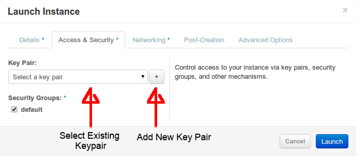

INTRO
This article illustrates how to spin up both persistent and ephemeral instances from the dashboard.
A Persistent instance uses a block storage volume for it's root file system. This allows the operating system files (and related user data) to survive termination of the associated instance.
An Ephemeral instance is the direct opposite of a Persistent instance. It's root volume will be destroyed once the instance is terminated!
Ephemeral instances are mostly usefull for one-off/short-lived applications whereas persistent instances will be prefferable for longterm applications.
Pre-requisites:-
- Active login session
- Sufficient resource quota
Instructions
- Open the launch Instance modal from either:-
- The instances panel (
Project→Compute→Instances) by clicking "launch instance" button at the top right of the panel. - The images panel (
Project→Compute→Images) by clicking the "launch" button in the actions collumn of the desired image.
- The instances panel (
-
In the "Launch Instance" modal form, provide an Instance Name and Flavor.
-
To launch an ephemeral instance, select "Boot from image" as your Instance Boot Source and choose your preffered image Image.
NB. If you opened the Launch Instance modal from the images panel, the last two optiona will already have been set

-
To launch a persistent instance, select "Boot from image (creates a new volume)" as your Instance Boot Source, choose your preffered image and enter a device size for your new block volume. Do not check the
Delete on Terminate:checkbox lest you defeat the purpose of your persistent instance.
-
-
Switch to the "Access & Security" tab and select the appropriate ssh key from the Key Pair dropdown. The selected key will be added to the default user's ssh
Authorized_Keysfile for key based authentication. If the drop down has no keys listed, click the+and follow the import keypair guide.

Post Creation
After launch, you probably want to assign a public IP to your instance.
Depending on the progress of your new VM's creation, manage your floating IP associations by clicking "Associate IP":-

-
Clicking "Associate IP" button in the VM's actions column if the VM is still spawning.

-
Selecting the "Associate IP" option of the "more" drop down menu in the actions collumn if the VM has successfully spun up.
If spin up was successfull, you should be able to ssh into your VM using "ssh [USER]@[Public IP]" where:-
[Public IP] is the public ip you associated with your instance and [USER] is the default image user provided by distro you chose.....which will be:-
- ubuntu (for ubuntu)
- debian (for debian)
- cloud-user (for CentOS)
Hence if you spun up a CentOS image and you assigned an ip 1.2.3.4, you should access your instance by ssh cloud-user@1.2.3.4